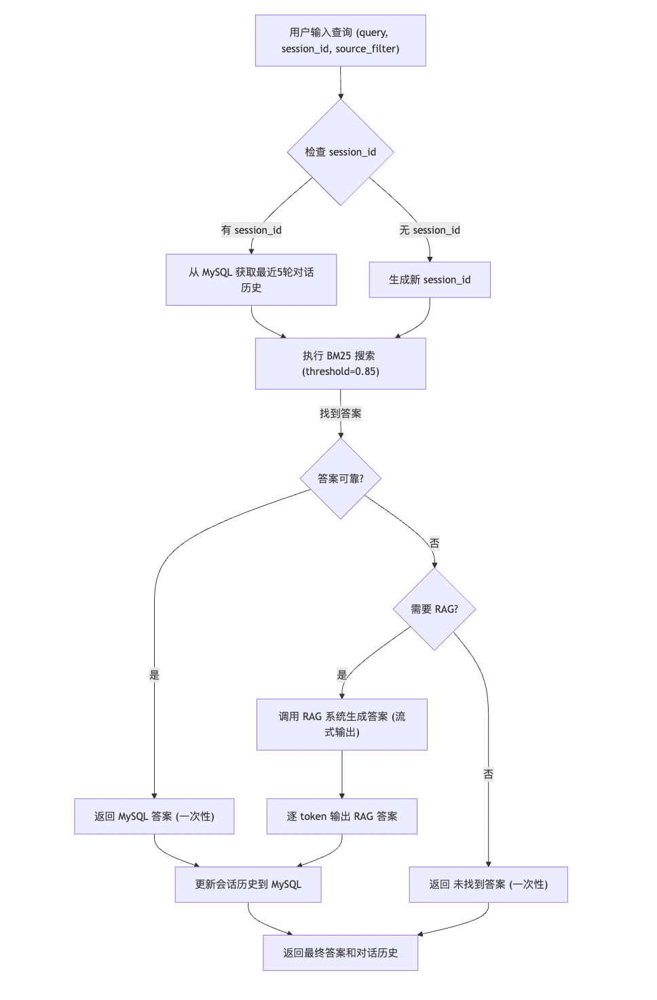

融合 FAQ 和知识库查询（优化版）¶
学习目标：¶
- 深入理解优化后的智能问答系统，掌握端到端工作流程。
- 学习如何通过对话历史和流式输出提升用户交互体验。
- 掌握 MySQL FAQ 和 RAG 系统的集成，以及健壮的错误处理和日志记录。
new_main.py 是对 old_main.py 的优化版本，新增了对话历史管理和流式输出功能，增强了交互性和实时性。系统整合了 MySQL 的 FAQ 精确匹配、RAG 的知识库检索、MySQL 对话历史存储，以及流式答案生成，适用于教育场景下的实时问答需求。
1 查询流程图¶
以下是优化后的智能问答系统查询流程图，展示用户输入到答案输出的处理逻辑，包括对话历史和流式输出。

2 流程说明¶
- 输入处理：用户提供查询 (
query)、会话 ID (session_id) 和可选的学科过滤 (source_filter)。 - 会话管理：若提供
session_id，从 MySQL 获取最近 5 轮对话历史；否则生成新的 UUID。 - BM25 搜索：使用 BM25 算法搜索 MySQL 知识库，设置相似度阈值 0.85。
- 答案判断：
- 若找到可靠答案（相似度 > 0.85），一次性返回。
- 若无可靠答案且需要 RAG，调用 RAG 系统以流式方式生成答案。
- 若无需 RAG，返回“未找到答案”。
- 历史更新：将查询和答案存入 MySQL 的
conversations表，保留最近 5 轮对话。 - 输出：通过流式输出（RAG）或一次性输出（MySQL）返回答案，并展示对话历史。
3 代码介绍¶
以下是 new_main.py 的完整代码，包含逐行注释，详细解析功能与实现逻辑。
3.1 导入必备的工具包¶
# 导入 MySQL 和 Redis 客户端，管理数据库和缓存
from mysql_qa import MySQLClient, RedisClient, BM25Search
# 导入 RAG 系统组件，用于知识库检索和答案生成
from rag_qa import VectorStore, RAGSystem
# 导入配置和日志工具，用于系统配置和日志记录
from base import logger, Config
# 导入 OpenAI 客户端，用于调用 DashScope API
from openai import OpenAI
# 导入时间库，用于记录处理时间
import time
# 导入 UUID 库，生成唯一会话 ID
import uuid
# 导入 pymysql 错误处理，用于数据库操作的异常捕获
import pymysql
3.2 系统初始化¶
- (
__init__) 初始化方法 - 功能：初始化日志、配置、数据库客户端、搜索模块、向量存储、RAG 系统和对话历史表。
- 关键点：通过 Config 管理 API 密钥和模型参数，异常处理确保 OpenAI 客户端初始化成功。
class IntegratedQASystem:
def __init__(self):
# 初始化日志工具，用于记录系统运行信息
self.logger = logger
# 初始化配置对象，加载系统参数
self.config = Config()
# 初始化 MySQL 客户端，用于数据库操作
self.mysql_client = MySQLClient()
# 初始化 Redis 客户端，用于缓存管理
self.redis_client = RedisClient()
# 初始化 BM25 搜索模块，结合 MySQL 和 Redis
self.bm25_search = BM25Search(self.redis_client, self.mysql_client)
try:
# 初始化 OpenAI 客户端，连接 DashScope API
self.client = OpenAI(api_key=self.config.DASHSCOPE_API_KEY,
base_url=self.config.DASHSCOPE_BASE_URL)
except Exception as e:
# 记录 OpenAI 初始化失败的错误日志
self.logger.error(f"OpenAI 客户端初始化失败: {e}")
# 抛出异常，终止初始化
raise
# 初始化向量存储，用于 RAG 系统的知识库管理
self.vector_store = VectorStore()
# 初始化 RAG 系统，传入向量存储和 DashScope API 调用函数
self.rag_system = RAGSystem(self.vector_store, self.call_dashscope)
# 初始化对话历史表，用于存储会话记录
self.init_conversation_table()
3.3 对话历史表初始化¶
- (
init_conversation_table) 方法 - 功能：在 MySQL 中创建
conversations表，存储会话 ID、问题、答案和时间戳，添加索引优化查询。 - 关键点：使用
IF NOT EXISTS避免重复创建，异常处理确保健壮性。
def init_conversation_table(self):
"""初始化MySQL中的conversations表，用于存储对话历史"""
try:
# 创建 conversations 表，包含会话 ID、问题、答案和时间戳
self.mysql_client.cursor.execute("""
CREATE TABLE IF NOT EXISTS conversations (
id INT AUTO_INCREMENT PRIMARY KEY,
session_id VARCHAR(36) NOT NULL,
question TEXT NOT NULL,
answer TEXT NOT NULL,
timestamp DATETIME NOT NULL,
INDEX idx_session_id (session_id)
)
""")
# 提交数据库事务
self.mysql_client.connection.commit()
# 记录表初始化成功的日志
self.logger.info("对话历史表初始化成功")
except pymysql.MySQLError as e:
# 记录表初始化失败的错误日志
self.logger.error(f"初始化对话历史表失败: {e}")
# 抛出异常，终止初始化
raise
3.4 调用 DashScope API¶
- (
call_dashscope) 方法 - 功能：通过 OpenAI 客户端调用 DashScope API，支持流式输出，逐 token 返回答案。
- 关键点：启用
stream=True实现流式输出，异常处理捕获 API 调用失败，支持前端实时显示。
def call_dashscope(self, prompt):
"""调用DashScope API生成答案（流式输出）"""
try:
# 创建聊天完成请求，启用流式输出
completion = self.client.chat.completions.create(
model=self.config.LLM_MODEL, # 使用配置中的语言模型
messages=[
{"role": "system", "content": "你是一个有用的助手。"}, # 系统提示
{"role": "user", "content": prompt}, # 用户输入的提示
],
timeout=30, # 设置 30 秒超时
stream=True # 启用流式输出
)
# 初始化收集流式输出的字符串
collected_content = ""
# 遍历流式输出的每个 chunk
for chunk in completion:
if chunk.choices and chunk.choices[0].delta.content:
# 获取当前 chunk 的内容
content = chunk.choices[0].delta.content
# 累积内容
collected_content += content
# 逐 token 返回，供前端实时显示
yield content
# 返回完整答案
return collected_content
except Exception as e:
# 记录 API 调用失败的错误日志
self.logger.error(f"LLM调用失败: {e}")
# 返回错误信息
return f"错误：LLM调用失败 - {e}"
3.5 获取最近对话历史¶
- (
_fetch_recent_history) 方法 - 功能：从 MySQL 的
conversations表获取指定session_id的最近 5 轮对话历史。 - 关键点：使用参数化查询防止 SQL 注入，返回结果按时间正序，异常处理确保健壮性。
def _fetch_recent_history(self, session_id: str) -> list:
"""获取最近5轮对话历史"""
try:
# 执行 SQL 查询，获取最近 5 轮对话
self.mysql_client.cursor.execute("""
SELECT question, answer
FROM conversations
WHERE session_id = %s
ORDER BY timestamp DESC
LIMIT %s
""", (session_id, 5))
# 将查询结果转换为字典列表
history = [{"question": row[0], "answer": row[1]} for row in self.mysql_client.cursor.fetchall()]
# 反转结果，按时间正序返回
return history[::-1]
except pymysql.MySQLError as e:
# 记录查询失败的错误日志
self.logger.error(f"获取对话历史失败: {e}")
# 返回空列表
return []
3.6 更新会话历史¶
- (
update_session_history) 方法 - 功能：将新问题和答案插入
conversations表，保留最近 5 轮对话，删除旧记录。 - 关键点：使用事务确保数据一致性，子查询删除超出限制的记录，日志记录操作结果。
def update_session_history(self, session_id: str, question: str, answer: str) -> list:
"""更新会话历史到MySQL，保留最近5轮对话"""
try:
# 插入新的对话记录
self.mysql_client.cursor.execute("""
INSERT INTO conversations (session_id, question, answer, timestamp)
VALUES (%s, %s, %s, NOW())
""", (session_id, question, answer))
# 获取更新后的对话历史
history = self._fetch_recent_history(session_id)
# 删除超出 5 轮的旧记录
self.mysql_client.cursor.execute("""
DELETE FROM conversations
WHERE session_id = %s AND id NOT IN (
SELECT id FROM (
SELECT id
FROM conversations
WHERE session_id = %s
ORDER BY timestamp DESC
LIMIT %s
) AS sub
)
""", (session_id, session_id, 5))
# 提交事务
self.mysql_client.connection.commit()
# 记录更新成功的日志
self.logger.info(f"会话 {session_id} 历史更新成功")
# 返回更新后的历史
return history
except pymysql.MySQLError as e:
# 记录数据库操作失败的错误日志
self.logger.error(f"更新会话历史失败: {e}")
# 回滚事务
self.mysql_client.connection.rollback()
# 抛出异常
raise
except Exception as e:
# 记录意外错误的日志
self.logger.error(f"更新会话历史意外错误: {e}")
# 回滚事务
self.mysql_client.connection.rollback()
# 抛出异常
raise
3.7 获取会话历史¶
- (
get_session_history) 方法 - 功能：从 MySQL 获取指定
session_id的对话历史，复用_fetch_recent_history。 - 关键点：保持代码简洁，适合外部调用（如 API 或界面展示）。
def get_session_history(self, session_id: str) -> list:
"""从MySQL获取会话历史"""
# 调用 _fetch_recent_history 获取对话历史
return self._fetch_recent_history(session_id)
3.8 清除会话历史¶
- (
clear_session_history) 方法 - 功能：删除指定
session_id的所有对话历史记录。 - 关键点：使用参数化查询防止 SQL 注入，事务管理确保操作原子性，返回布尔值表示成功或失败。
def clear_session_history(self, session_id: str) -> bool:
"""清除指定会话历史"""
try:
# 删除指定 session_id 的所有对话记录
self.mysql_client.cursor.execute("""
DELETE FROM conversations
WHERE session_id = %s
""", (session_id,))
# 提交事务
self.mysql_client.connection.commit()
# 记录清除成功的日志
self.logger.info(f"会话 {session_id} 历史已清除")
# 返回 True 表示成功
return True
except pymysql.MySQLError as e:
# 记录清除失败的错误日志
self.logger.error(f"清除会话历史失败: {e}")
# 回滚事务
self.mysql_client.connection.rollback()
# 返回 False 表示失败
return False
3.9 查询处理¶
- (
query) 方法
- 功能：处理用户查询，优先使用 BM25 搜索 MySQL，若无可靠答案则回退到 RAG，支持流式输出和对话历史。
- 关键点：通过生成器逐 token 返回 RAG 答案，记录处理时间，支持学科过滤。
-
注意：1.修改generate_answer方法添加history参数，2.修改rag_prompt方法的提示词
def query(self, query, source_filter=None, session_id=None):
"""查询集成系统，支持对话历史和流式输出"""
start_time = time.time() # 记录查询开始时间
# 记录查询信息到日志
self.logger.info(f"处理查询: '{query}' (会话ID: {session_id})")
# 获取对话历史，若无 session_id 则返回空列表
history = self.get_session_history(session_id) if session_id else []
# 执行 BM25 搜索，获取答案和是否需要 RAG 的标志
answer, need_rag = self.bm25_search.search(query, threshold=0.85)
if answer:
# 如果找到可靠答案，记录答案到日志
self.logger.info(f"MySQL答案: {answer}")
if session_id:
# 更新对话历史
self.update_session_history(session_id, query, answer)
# 计算处理时间
processing_time = time.time() - start_time
# 记录处理时间到日志
self.logger.info(f"查询处理耗时 {processing_time:.2f}秒")
# 一次性返回答案，标记为完整
yield answer, True
elif need_rag:
# 如果需要 RAG，记录回退信息到日志
self.logger.info("无可靠MySQL答案，回退到RAG")
# 初始化收集完整答案的字符串
collected_answer = ""
# 从 RAG 系统获取流式输出
for token in self.rag_system.generate_answer(query, source_filter=source_filter, history=history):
# 累积答案
collected_answer += token
# 逐 token 返回，标记为部分答案
yield token, False
if session_id:
# 更新对话历史，存储完整答案
self.update_session_history(session_id, query, collected_answer)
# 计算处理时间
processing_time = time.time() - start_time
# 记录处理时间到日志
self.logger.info(f"查询处理耗时 {processing_time:.2f}秒")
# 返回空字符串，标记流结束
yield "", True
else:
# 如果无答案，记录信息到日志
self.logger.info("未找到答案")
# 计算处理时间
processing_time = time.time() - start_time
# 记录处理时间到日志
self.logger.info(f"查询处理耗时 {processing_time:.2f}秒")
# 一次性返回默认答案，标记为完整
yield "未找到答案", True
3.10 命令行交互¶
- (
main) 函数 - 功能：提供交互式命令行界面，生成唯一会话 ID，接受用户查询和学科过滤，流式显示答案并展示对话历史。
- 关键点：支持流式输出，验证学科过滤有效性，异常处理和资源清理确保系统健壮。
def main():
# 定义主函数，提供命令行交互界面
qa_system = IntegratedQASystem() # 初始化问答系统
# 生成唯一会话 ID
session_id = str(uuid.uuid4())
# 打印欢迎信息
print("\n欢迎使用集成问答系统！")
# 打印会话 ID
print(f"会话ID: {session_id}")
# 打印支持的学科类别
print(f"支持的学科类别：{qa_system.config.VALID_SOURCES}")
# 提示用户输入查询或退出
print("输入查询进行问答，输入 'exit' 退出。")
try:
while True:
# 获取用户输入的查询
query = input("\n输入查询: ").strip()
if query.lower() == "exit":
# 如果用户输入 exit，记录退出日志
logger.info("退出系统")
# 打印退出信息
print("再见！")
# 退出循环
break
# 获取用户输入的学科过滤
source_filter = input(f"请输入学科类别 ({'/'.join(qa_system.config.VALID_SOURCES)}) (直接回车默认不过滤): ").strip()
if source_filter and source_filter not in qa_system.config.VALID_SOURCES:
# 如果学科过滤无效，记录警告日志
logger.warning(f"无效的学科类别 '{source_filter}'，将不过滤")
# 设置为空，忽略过滤
source_filter = None
# 打印答案提示
print("\n答案: ", end="", flush=True)
# 初始化累积答案的字符串
answer = ""
# 迭代 query 方法的生成器
for token, is_complete in qa_system.query(query, source_filter=source_filter, session_id=session_id):
if token:
# 仅当 token 非空时打印
print(token, end="", flush=True)
# 累积答案
answer += token
if is_complete:
# 如果是完整答案或流结束，换行并退出循环
print()
break
# 打印对话历史
history = qa_system.get_session_history(session_id)
print("\n最近对话历史:")
for idx, entry in enumerate(history, 1):
# 按顺序打印历史记录
print(f"{idx}. 问: {entry['question']}\n 答: {entry['answer']}")
except Exception as e:
# 记录系统错误日志
logger.error(f"系统错误: {e}")
# 打印错误信息
print(f"发生错误: {e}")
finally:
# 关闭 MySQL 连接
qa_system.mysql_client.close()
if __name__ == "__main__":
# 如果脚本作为主程序运行，调用 main 函数
main()
章节总结¶
本章展示了优化后的 new_main.py，通过新增对话历史管理和流式输出功能，显著提升了交互性和实时性。系统结合 MySQL FAQ 的快速匹配、RAG 系统的复杂查询处理、MySQL 的历史存储，以及流式答案生成，配备健壮的日志记录和错误处理，适合教育场景下的实时问答需求